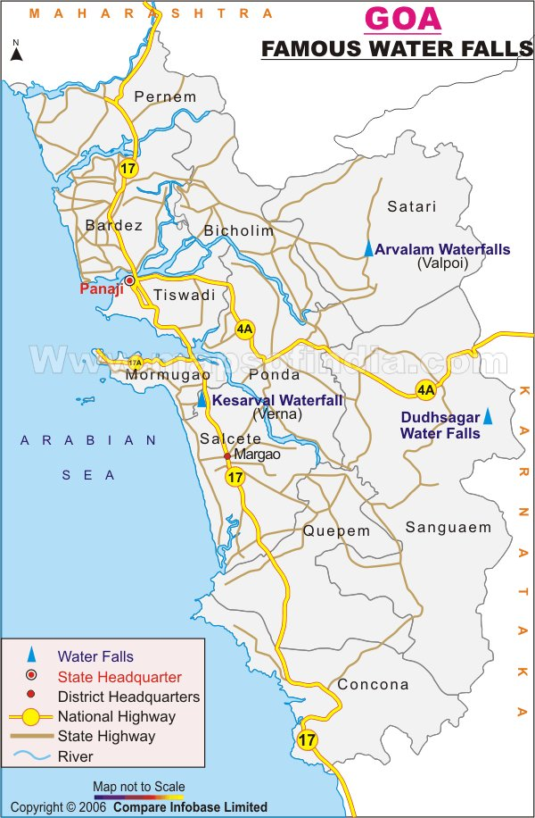

It is surprising how so many people visit Goa every year and yet Dudhsagar is a mystery place for most. Dudhsagar which literally means a Sea of Milk is a four-tiered waterfall located 60 km from Panaji by road and is amongst India’s tallest waterfalls with a height of 310 meters and an average width of 30 meters. Best time to visit –June to September
Map:
